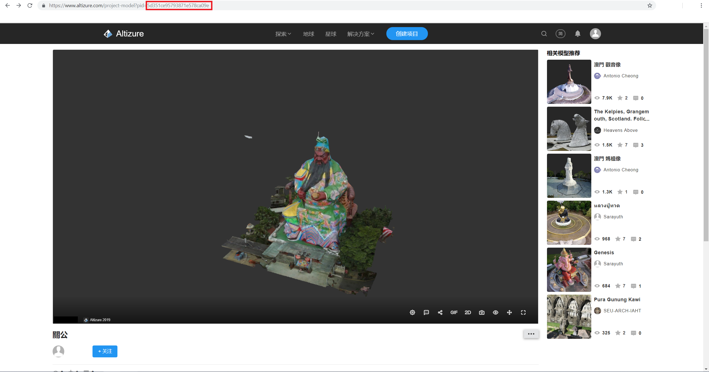
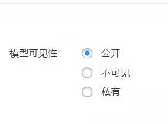
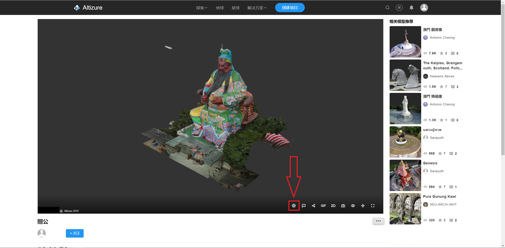
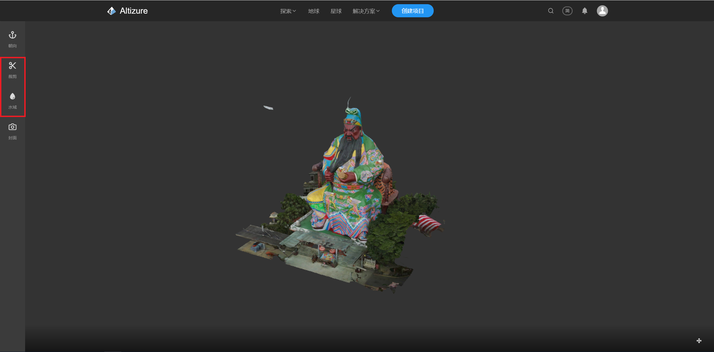

3D SDK 教程 2.如何加载 Altizure 项目
Altizure SDK 为开发者提供了多种多样的功能来丰富您的应用，为了防止过多的内容打扰您使用的兴趣，本章节及之后的章节将分为小白部分和进阶部分。
小白部分仅介绍如何快速上手最基础的应用功能，方便您在短时间内搭起框架；
进阶部分会在小白部分的基础之上做拓展和深化，帮助您精心打磨您的产品。
强烈建议您优先完成所有章节的小白部分，如果没有得到满意的答案，再去相应章节的进阶部分寻找答案。
1. 小白部分
1.1 获得pid
sandbox.add('AltizureProjectMarker', {pid: '5849104597b73e0b090c01e8'})
如范例 2-1 add project 所示，加载一个位于 Altizure 主站上的项目，需要在 SDK 中输入相应项目的 pid 。
在Altizure主站打开您所想要加载的项目，在地址栏内就可以找到这个项目的pid，如下图所示。

当然，也要先确定模型的可见性，偷偷加载别人的私有模型肯定是不行的。

- 公开：将会在Altizure主站显示，可以被SDK访问到
- 不可见：不会在Altizure主站显示，可以被SDK访问到
- 私有：不会在Altizure主站显示，不可以被SDK访问到
此外，在相片数量足够、位置合适等条件下，正常生成的模型的大小、位置、姿态是不需要做额外调整的。如需调整，请参考Altizure SDK 文档相关内容。
相关部分请参考范例 2.1
1.2 加载裁切和水面
如需裁剪多余的模型和添加水面效果，需要先在Altizure主站对模型进行设置。

首先点击模型中的“设置”按钮，进入模型设置页面，然后就可以设置模型的裁剪和水面效果了。

在设置完成后，在SDK中加载相关模型后导入裁切效果和水面。
marker.loadCropMask()
marker.water.import()
相关部分请参考范例 2.1.1
1.3 小结
在本教程中展示了如何使用 pid 在 SDK 中导入模型，并如何导入模型的裁切和水面效果。
所有可以上传到 Altizure 主站的模型均有 pid ，也均可使用上述方法加载，包括 Altizure 实景模型、点云模型、第三方 OBJ 模型等。
完整代码如下：
sandbox.add('AltizureProjectMarker', {pid: '5993d8e65cbfaf1d4eba995d'})
.then(function (marker) {
m = marker
// wait for marker initialization
return marker.initialized
})
.then(function (marker) {
// apply crop from altizure
return marker.loadCropMask()
})
.then(function (marker) {
// import water from altizure
return marker.water.import()
})
2. 进阶部分
2.1 加载第三方 OBJ 模型
首先请保证您要加载的模型可以在 MeshLab 中打开。
非Altizure重建出的模型，有时需要设置各种参数，具体怎样调整推荐您使用我们的 Altizure 星球，里面可以进行可视化的调整，也可以在上传以前使用 MeshLab进行调整。
首先第三方 OBJ 模型可以按照 “上传 Altizure 主站”=》“使用 pid 加载” 的流程操作
相关部分请参考范例 2.5.1
另外，您也可以使用加载本地模型的方式加载
// add obj models
let obj = new altizure.OBJMarker({
position: {lng: 113.93916035952945, lat: 22.536167496052556, alt: 28.976462667429363},
sandbox: sandbox,
name: 'arbor',
shape: 'CUSTOMIZE',
objUrl: '../public/assets/object/2/bian.obj',
mtlUrl: '../public/assets/object/2/bian.mtl',
upDir: {x: 0,y: 1,z: 0},
"scale": 2
})
相关部分请参考范例 2.5
2.2 加载点云模型
可以按照 “使用 pid 加载” 的流程操作
相关部分请参考范例 2.15
3. 了解更多
—
该文档最后修改于 Wed Sep 04 2019 11:13:28 GMT+0000 (Coordinated Universal Time)